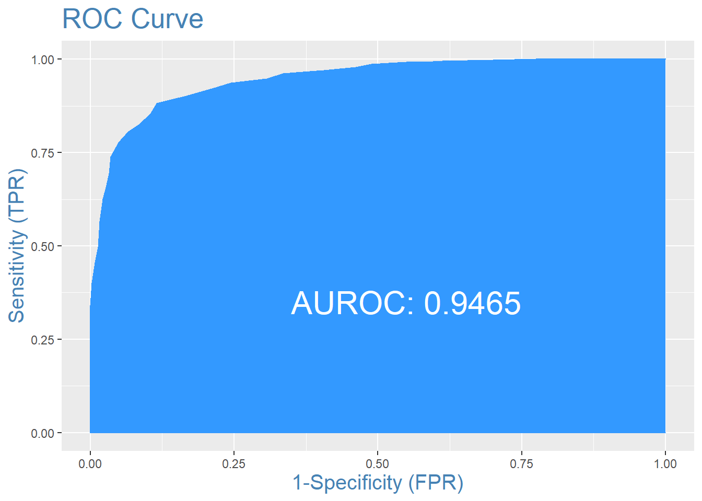
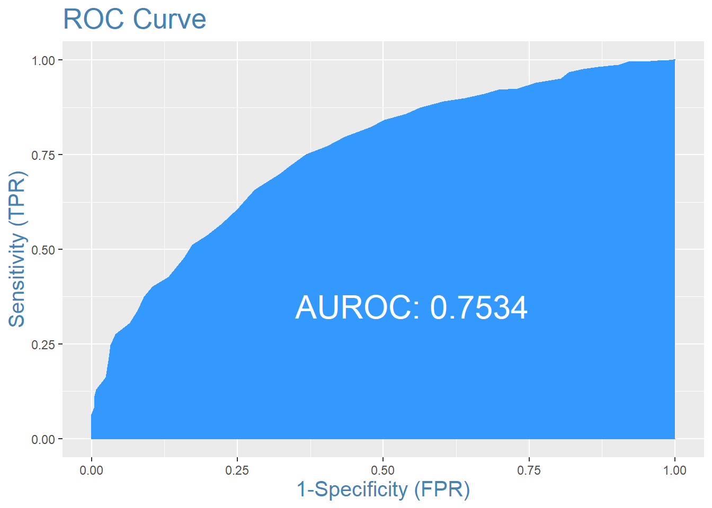

Chapter 4 Models
After data cleaning and variable selection, I created different models, including logistic regression, xgboost, random forest, and neural networks and scored them based on area under the ROC curve (AROC) and misclassification rate. AROC showed the models performance across different cutoffs, which may not seem useful since the cutoff should be .5. However, this metric allowed me to asses the overall performance of the model, not just classification. The three best models were an xgboost model, a random forest model, and a neural net model.
4.1 XGBoost
4.1.1 Methodology and Analysis
In order to create this model, I had to turn the parameters to the dataset. I used 30-fold cross validation to pick the parameters that resulted in the lowest amount of error and prevented overfitting. However, this model still overfit the training data. The ROC curve and Confusion Matrix for this model on the training data is shown below. The model does extradinarily well with a AROC of .94 and misclassification rate of —-.

## 0 1
## 0 322 43
## 1 42 321The model also calculates the importance of each variable in predicting which team wins. The variables are clustered based on importance to the model, with cluster 1 in red and cluster 2 in light blue. The two most important variables were the Pomeroy rankings for the two teams. The plot of Variable Importance is shown below.
4.1.2 Results
Even though the model performed extremely well on the training set, it does not perform as well on the validation dataset (2019 and 2021 seasons) compared to the training dataset furthering the evidence that the model is overfitted However, the model performs very well on the 2019 NCAA tournament compared to other models I created, predicting about 76% of the games correctly. However, the model performs extremely poorly on the 2021 NCAA tournament, predicting only 63% of games correctly.
____ Insert Comparisons Here
4.2 Random Forest Model
4.2.1 Methodology and Analysis
The Random Forest model was tuned similarly to the xgboost model using cross-validation. This model performed worse than the xgboost model on the training set, but more in line with model scores on the validation datasets. The AROC for the random forest .75 and the misclassification rate was —-. The area under the ROC curve and Confusion matrix are shown below.

## 0 1
## 0 246 109
## 1 118 255The random forest model also displays the most important variables in determining the winning team. A table of the most important variables to the model based on change in accuracy and impurity are shown below. This table also shows the Pomeroy rankings for both teams are the most influential in determining the winner.

4.2.2 Results
The random forest model had similar performance on the 2019 NCAA tournament compared to the training. The model predicted 73% of the games correctly during this tournament with an AROC of .7963. The model performed worse on the 2021 tournament with a classification rate of 65% and an AROC of .714. The table below shows the model performance on the two tournaments —–